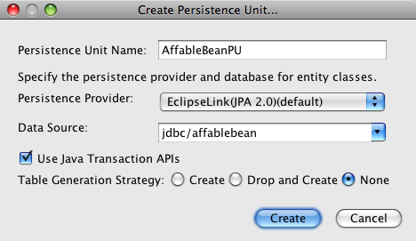
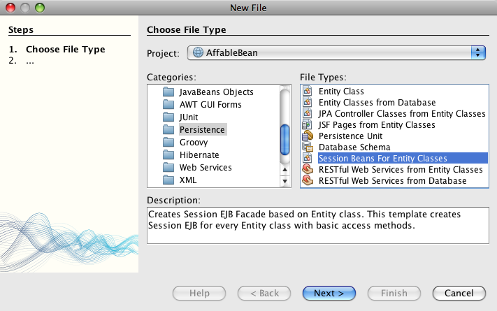
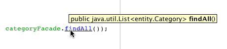
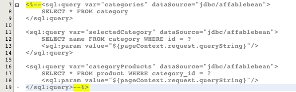

Apache NetBeans
Apache NetBeansLatest release
O tutorial do NetBeans E-commerce: Adicionando Classes de Entidade e Beans de Sessão
| This tutorial needs a review. You can open a JIRA issue, or edit it in GitHub following these contribution guidelines. |
-
Adicionando Classes de Entidade e Beans de Sessão

Figure 1. O conteúdo desta página se aplica ao NetBeans IDE, versões e 6.8 e 6.9
Esta unidade do tutorial introduz as tecnologias Enterprise JavaBeans (EJB) e Java Persistence (JPA). Nela, você utiliza dois dos assistentes do IDE que são essenciais para o desenvolvimento do Java EE. São elas:
-
Classes de Entidade do assistente de Banco de Dados: Cria uma classe de entidade da Java Persistence API para cada tabela de banco de dados selecionada, completa com anotações de consulta nomeadas, campos que representam colunas e relacionamento que representam chaves estrangeiras.
-
Beans de Sessão para o assistente de Classes de Entidade: Cria uma fachada de sessão do EJB para cada classe de entidade com métodos de acesso básicos.
Esses dois assistentes fornecem uma maneira eficaz de configurar rapidamente o modelo para sua aplicação. Se reexaminar o diagrama de MVC para a aplicação que está construindo, poderá ver onde beans de sessão EJB e classes de entidade JPA se encaixam na sua estrutura.

Figure 2. Diagrama MVC da aplicação AffableBean
Nesta unidade, as classes de entidade criadas formam uma representação baseada em Java do banco de dados affablebean. Enquanto cada classe de entidade representa uma tabela do banco de dados, instâncias de classes de entidade correspondem a registros que podem ser salvos (ou seja, persistidos) no banco de dados. A lógica de negócios da aplicação é encapsulada por beans de sessão, que podem ser utilizados como classes de fachada que ativam o CRUD (Create-Read-Update-Delete, Criar, Ler, Atualizar) às entidades (conforme demonstrado aqui) ou podem conter códigos que implementam ações específicas para sua aplicação. (Um exemplo disso é fornecido na Unidade 9: Integrando a Lógica de Negócios Transacional).
Você pode exibir uma demonstração ao vivo da aplicação construída neste tutorial: Aplicação de Demonstração do Tutorial do NetBeans E-commerce
| Software ou Recurso | Versão Necessária |
|---|---|
Pacote Java, 6.8 ou 6.9 |
|
versão 6 |
|
v3 ou Open Source Edition 3.0.1 |
|
versão 5.1 |
|
snapshot 3 |
Observações:
-
O NetBeans IDE requer o Java Development Kit (JDK) para ser executado adequadamente. Se você não tiver nenhum dos recursos listados acima, o JDK deverá ser o primeiro item a ser submetido a download e instalado.
-
O Pacote Java do NetBeans IDE inclui o Java Web e tecnologias EE, que são necessárias para a aplicação construída neste tutorial.
-
O pacote Java do NetBeans IDE também inclui o GlassFish Server, necessário para este tutorial. Você poderia fazer download do GlassFish Server independentemente, mas a versão fornecida pelo NetBeans do qual fez download tem a vantagem adicional de ser registrada automaticamente no IDE.
-
Você pode seguir esta unidade do tutorial sem ter concluído as unidades anteriores. Para isso, consulte as instruções de configuração, que descrevem como preparar o banco de dados e estabelecer uma conectividade entre o IDE, o GlassFish e o MySQL.
-
O Snapshot 4 do projeto
AffableBeanestá disponível para download e corresponde ao estado do projeto após a conclusão desta unidade usando o NetBeans IDE 6.9.
O que são as Tecnologias EJB e JPA?
Até agora, o projeto que você vem desenvolvendo neste tutorial poderia ser executado em um servidor web com um contêiner do servlet, como o Apache Tomcat. Afinal, até agora, só foram utilizadas as tecnologias JSTL e servlet e estão se conectando ao banco de dados diretamente utilizando JDBC. Na realidade, seria possível, teoricamente, continuar a desenvolver a aplicação utilizando apenas essas tecnologias, e codificar, ao mesmo tempo, para todos os aspectos da aplicaçãoo, incluindo segurança de thread, transações e segurança. No entanto, ao utilizar o Enterprise beans com classes de entidade JPA, você pode se concentrar na lógica de negócios da aplicação e usar, ao mesmo tempo, soluções que já foram testadas. As seções a seguir apresentam as duas tecnologias e definem sua atribuição no desenvolvimento EE.
Enterprise JavaBeans
A página oficial do produto EJB descreve a tecnologia EnterPrise JavaBeans como uma "arquitetura do componente do servidor" que "ativa o desenvolvimento rápido e simplificado de aplicações distribuídas, transacionais, seguras e portáteis". Voce pode aplicar EJBs (ou seja., Enterprise beans) aos projetos, e os serviços fornecidos pela tecnologia permanecerão transparentes para você como desenvolvedor, eliminando, assim, a tarefa tediosa e geralmente propensa a erros de adicionar vários códigos de placa que seriam, de outra maneira, necessários. Se for novo no desenvolvimento EE, pode questionar a necessidade de EJBs na aplicação Java Web. O livro EJB 3 Em Ação, de Debu Panda, Reza Rahman e Derek Lane, parafraseia muito bem a atribuição da tecnologia EJB:
|
_Embora muitas pessoas pensem que EJBs são um exagero para desenvolvimento de aplicações Web relativamente simples e de tamanho moderado, isso não é verdade. Quando se constrói uma casa, não se constrói tudo desde o início. Em vez disso, se compra materiais ou até mesmo serviços terceirizados, conforme ncessário. Também não é muito prático construir uma aplicação corporativa desde o início. A maioria das aplicações de servidor tem muito em comum, incluindo a rotatividade da lógica de negócios, gerenciamento do estado da aplicação, armazenamento e recuperação de informações de um banco de dados relacional, gerenciamento de transações, implementação de segurança, execução de processamento assíncrono, integração de sistemas, e assim por diante. Como framework, o contêiner do EJB fornece esses tipos de funcionalidade comum, como serviços de fábrica, de modo que os componentes do EJB podem utilizá-los nas aplicações sem reinventar a roda. Por exemplo, vamos dizer que quando se constrói um módulo de cartão de crédito na aplicação Web, você escreve muito código complexo e propenso ao erro para gerenciar transações e controle de acesso de segurança. Isso poderia ser evitado utilizando os serviços de transação declarativa e de segurança fornecidos pelo contêiner EJB. Esses serviços, bem como muitos outros, estão disponíveis para componentes do EJB quando eles são implantados em um contêiner EJB. Isso significa escrever aplicações de alta qualidade e ricos em funcionalidades muito mais rápido do que você poderia pensar._[1] |
É possível pensar no EJB como componentes ou classes Java que são incorporadas no projeto, bem como um framework que fornece vários serviços relacionados à empresa. Alguns dos serviços que aproveitamos neste tutorial estão descritos em EJB 3 Em Ação como se segue:
-
Criando pools: Para cada componente do EJB, a plataforma EJB cria um pool de instâncias do componente que são compartilhadas pelos clientes. Em qualquer ponto no tempo, cada instância do pool tem permissão de ser utilizada apenas por um único cliente. Assim que uma instância tiver terminado de atender a um cliente, ela é devolvida para o pool para reutilização, em vez de ser frivolamente descartada na lixeira para ser coletada novamente depois.
-
Segurança de Thread: O EJB torna todos os componentes seguros para thread e com alto desempenho, de maneira que sejam completamente invisíveis. Isso significa você pode escrever os componentes do servidor como se estivesse desenvolvendo uma aplicação desktop de um único thread. Não importa a complexidade do componente em si, o EJB se certificará de que ele seja seguro para thread.
-
Transações: O EJB oferece suporte a gerenciamento de transações declarativas que o ajuda a adicionar comportamento transacional aos componentes utilizando a configuração simples em vez do código. Na realidade, é possível designar qualquer método de componente como sendo transacional. Se o método for concluído normalmente, o EJB confirmará a transação e tornará as alterações de dados feitas pelo método permanentes. Caso contrário, a transação será desfeita. As transações EJB gerenciadas por contêiner são demonstradas na Unidade 9, Integrando a Lógica de Negócios Transacional.
-
Segurança: o EJB suporta a integração com a API Java Authentication and Authorization Service (JAAS) e, portanto, é fácil externalizar por completo a segurança e proteger a aplicação usando uma configuração simples, em vez de encher sua aplicação com códigos de segurança.[2] Na Unidade 11, Protegendo a Aplicação, a demonstração da anotação <a href="http://download.oracle.com/javaee/6/api/javax/annotation/security/RolesAllowed.html" target="_blank"`@RolesAllowed` do EJB é fornecida.
Persistência de Java
No contexto do Java Enterprise, persistência refere-se ao ato de armazenar automaticamente os dados contidos em objetos Java em um banco de dados relacional. A Java Persistence API (JPA) é uma tecnologia de mapeamento objeto-relacional (ORM) que permite às aplicações gerenciar dados entre objetos Java e um banco de dados relacional, de maneira transparente para o desenvolvedor. Isso significa que o JPA pode ser aplicado aos projetos criando e configurando um conjunto de classes Java (entidades) que espelham seu modelo de dados. A aplicação poderá, em seguida, acessar essas entidades, como se estivesse acessando diretamente o banco de dados.
Existem várias vantagens em utilizar JPA nos projetos:
-
A JPA tem sua própria linguagem rica e semelhante a SQL para consultas estáticas e dinâmicas. Utilizando a Java Persistence Query Language (JPQL), as aplicações permanecerão portáteis em diferentes fornecedores de banco de dados.
-
É possível evitar a tarefa de escrever código JDBC/SQL prolixo e propenso a erro.
-
A JPA fornece, de maneira transparente, serviços para cache de dados e otimização de desempenho.
O que são Beans de Sessão?
Beans de sessão do Enterprise são chamados por um cliente para realizar uma operação de negócio específica. O nome sessão implica que uma instância do bean está disponível pela duração de uma "unidade de trabalho". A especificação do EJB 3.1 descreve um objeto de sessão típico como tendo as seguintes características:
-
É executado em nome de um único cliente
-
Pode ter reconhecimento da transação
-
Atualiza dados compartilhados em um banco de dados subjacente
-
Não representa dados compartilhados diretamente no banco de dados, embora possa acessar e atualizar esses dados
-
Tem vida relativamente curta
-
É removido quando o contêiner EJB trava. O cliente tem que restabelecer um novo objeto de sessão para continuar o cálculo.
O EJB fornece três tipos de beans de sessão: com estado, sem estado e singleton. As seguintes descrições são adaptadas do Tutorial do Java EE 6.
-
Com estado: O estado do bean é mantido em vários chamados de método. O "estado" se refere aos valores de suas variáveis de instância. Como o cliente interage com o bean, esse estado é normalmente chamado de estado conversacional.
-
Sem estado: Beans sem estado são utilizados para operações que podem ocorrer em uma única chamada de método. Quando o método finaliza o processamento, o estado do bean específico do cliente não é retido. Um bean de sessão sem estado não mantém, portanto, um estado conversacional com o cliente.
-
Singleton: Um bean de sessão singleton é instanciado uma vez por aplicação e existe durante o ciclo de vida da aplicação. Beans de sessão singleton são projetados para circunstâncias em que uma única instância de enterprise bean é compartilhada e acessada de forma concorrente pelos clientes.
Para obter mais informações sobre beans de sessão EJB, consulte o Tutorial do Java EE 6: O que é um bean de sessão?.
Com a finalidade de desenvolver a aplicação de e-commerce neste tutorial, trabalharemos apenas com beans de sessão sem estado.
Sobre Especificações e Implementações
As tecnologias EJB e JPA são definidas pelas seguintes especificações:
Essas especificações definem as tecnologias. Para aplicar uma tecnologia ao projeto, no entanto, será necessário utilizar uma implementação da especificação. Quando uma especificação se torna finalizada, ela inclui uma implementação de referência, que é uma implementação gratuita da tecnologia. Caso ache este conceito confuso, considere a seguinte analogia: Uma composição musical (ou seja, as notas em uma página) define uma peça musical. Quando um músico a aprende a composição e grava sua apresentação, ele cria uma interpretação da peça. Dessa maneira, a composição musical é semelhante à especificação técnica e a gravação do músico corresponde à implementação da especificação.
Consulte O que é o Processo da Comunidade Java? para obter uma explicação das especificações técnicas Java e como elas são formalmente padronizadas.
Se examinar as páginas de download das releases finais das especificações do EJB e do JPA, encontrará links para as seguintes implementações de referência:
Implementações da especificação da JPA são chamadas de provedores de persistência e o provedor de persistência que foi escolhido como a implementação de referência da especificação da JPA 2.0 é chamado de EclipseLink.
Se examinar o link para a implementação de referência do EJB, chegará em uma página que lista não apenas a implementação para o EJB, mas para todas as implementações de referência fornecidas pelo Projeto GlassFish. O motivo para isso é que o Projeto GlassFish forma a implementação de referência da especificação da plataforma Java EE 6 (JSR 316). O servidor de aplicações GlassFish v3 (ou o Open Source Edition), que você está utilizando para construir o projeto de e-commerce neste tutorial, contém as implementações de referência de todas as tecnologias desenvolvidas pelo Projeto GlassFish. Assim, ele é referenciado como um contêiner Java EE 6.
Um contêiner Java EE contém três componentes essenciais: um contêiner web (ou seja, servlet), um contêiner EJB e um provedor de persistência. O cenário de implantação para a aplicação de e-commerce é exibido no diagrama a seguir. As classes de entidade criadas nesta unidade são gerenciadas pelo provedor de persistência. Os beans de sessão criados nesta unidade são gerenciados pelo contêiner EJB. As views são renderizadas nas páginas JSP, que são gerenciadas pelo contêiner web.

Figure 3. Como um contêiner Java EE, o GlassFish v3 contém contêineres Web e EJB e o EclipseLink, o provedor de persistência
Adicionando Classes de Entidade
Comece utilizando Classes de Entidade do IDE do assistente de Banco de dados para gerar classes de entidade com base no esquema affablebean. O assistente conta com o provedor de persistência subjacente para realizar essa tarefa.
-
Abra o snapshot do projeto no IDE. No IDE, Pressione Ctrl-Shift-O (âŚ�-Shift-O no Mac) e navegue para o local em seu computador onde você descompactou o arquivo de download.
-
Pressione Ctrl-N (⌘-N no Mac) para abrir o assistente de Arquivo.
-
Selecione a categoria Persistência e, em seguida, selecione Classes de Entidade em Banco de Dados. Clique em Próximo.
-
Na Etapa 2: Tabelas de Banco de Dados, escolha
jdbc/affablebeanna lista drop-down Fonte de Dados. A lista drop-down é preenchida por fontes de dados registradas no servidor de aplicações.
Quando você escolhe a fonte de dados jdbc/affablebean, o IDE varre o banco de dados e lista as tabelas de banco de dados no painel Tabelas Disponíveis.

Figure 4. Escolha uma origem de dados disponível para ter o IDE lido em tabelas de banco de dados
-
Clique no botão Adicionar Tudo e, em seguida, em Próximo.
-
Etapa 3 do assistente de Classes de Entidade do Banco de dados é um pouco diferente entre o NetBeans IDE 6.8 e 6.9. Dependendo da versão do IDE que você está usando, execute as seguintes etapas.
[[68]] ==== NetBeans IDE 6.8

Figure 5. Netbeans 6.8: assistente Classes de Entidade do Banco de Dados, Etapa 3: Classes de Entidade
-
Digite entity (entidade) no campo Pacote. O assistente criará um novo pacote para as classes de entidade depois da conclusão.
-
Clique no botão Criar Unidade de Persistência. A caixa de diálogo Criar Unidade de Persistência será aberta.

Figure 6. Use a caixa de diálogo Criar Unidade de Persistência para gerar um arquivo persistence.xml
Uma unidade de persistência se refere a uma coleção de classes de entidade que existem em uma aplicação. A caixa de diálogo acima gera um arquivo persistence.xml, que é usado por seu provedor de persistência para especificar as definições de configuração da unidade de persistência. Note que "EclipseLink (JPA 2. 0)" é a seleção default para o servidor associado ao projeto. Deixe "Estratégia de Geração de Tabela" definido como “None”. Isso impede o provedor de persistência de afetar o banco de dados. (Por exemplo, se desejar que o provedor de persistência delete e, em seguida, recrie o banco de dados com base nas classes de entidade existentes, seria possível definir a estratégia como “Drop and Create”. Essa ação seria, em seguida, executada toda vez que o projeto fosse implantado).
-
Clique em Criar.
-
De volta à Etapa 3: Classes de Entidade, note que os nomes de classes das entidades são baseados em tabelas de banco de dados. Por exemplo, a entidade
CustomerOrderé mapeada para a tabela de banco de dadoscustomer_order. Além disso, note que a opção "Gerar Anotações de Consulta Nomeada para Campos Persistentes" está selecionada por default. Começaremos utilizando várias consultas nomeadas posteriormente neste tutorial.
-
Prossiga para a etapa 7 abaixo.
[[69]] ==== NetBeans IDE 6.9

Figure 7. Netbeans 6.9: assistente Classes de Entidade do Banco de Dados, Etapa 3: Classes de Entidade
-
Digite entity (entidade) no campo Pacote. O assistente criará um novo pacote para as classes de entidade depois da conclusão.
-
Observe o seguinte:
-
Os nomes das classes das entidades são baseados em tabelas de banco de dados. Por exemplo, a entidade
CustomerOrderserá mapeada para a tabela de banco de dadoscustomer_order. -
A opção "Gerar Anotações de Consulta Nomeada para Campos Persistentes" é selecionada por default. Começaremos utilizando várias consultas nomeadas posteriormente neste tutorial.
-
A opção "Criar Unidade de Persistência" é selecionada por default. Uma unidade de persistência é uma coleção de classes de entidade que existem em uma aplicação. A unidade de persistência é definida por um arquivo de configuração
persistence.xml, que é lido pelo seu provedor de persistência. Portanto, ativar esta opção significa que o assistente também gerará um arquivopersistence.xmle irá preenchê-lo com as definições default.
-
-
Clique em Finalizar. As classes de entidade JPA são geradas com base nas tabelas de banco de dados
affablebean. Você pode examinar as classes de entidade na janela Projetos, expandindo o pacoteentityrecém-criado. Observe também que a nova unidade de persistência existe no nó Arquivos de Configuração.

Figure 8. Exibir novas classes de entidade na janela Projetos
Note que o assistente gerou uma classe de entidade adicional, OrderedProductPK. Lembre-se de que a tabela ordered_product do modelo de dados utiliza uma chave primária composta que inclui as chaves primárias das tabelas customer_order e product. (Consulte Criação de Modelo de Dados: Criando Relacionamentos Muitos para Muitos). Por esse motivo, o provedor de persistência cria uma classe de entidade separada para a chave composta e incorpora-a na entidade OrderedProduct. É possível abrir OrderedProduct no editor para inspecioná-lo. A JPA utiliza a anotação @EmbeddedId para significar que a classe que pode ser incorporada é uma chave primária composta.
public class OrderedProduct implements Serializable {
private static final long serialVersionUID = 1L;
*@EmbeddedId*
protected OrderedProductPK orderedProductPK;Pressione Ctrl-Espaço na anotação @EmbeddedId para chamar a documentação da API.

Figure 9. Pressione Ctrl-Espaço para chamar a documentação da API
-
Abra a unidade de persistência (
persistence. xml) no editor. O IDE fornece uma view do Design das unidades de persistência, além da view XML. A view do Design fornece uma maneira conveniente de fazer mudanças na configuração para o gerenciamento do projeto do provedor de persistência.

Figure 10. View do Design da unidade de persistência AffableBeanPU
-
Clique na guia XML na parte superior da unidade de persistência
AffableBeanPUpara abrir a view XML. Adicione a propriedade a seguir ao arquivo.
<persistence-unit name="AffableBeanPU" transaction-type="JTA">
<jta-data-source>jdbc/affablebean</jta-data-source>
*<properties>
<property name="eclipselink.logging.level" value="FINEST"/>
</properties>*
</persistence-unit>Defina a propriedade de nível de log como FINEST para que possa exibir toda a saída possível produzida pelo provedor de persistência quando a aplicação é executada. Isso permite ver o SQL que o provedor de persistência está utilizando no banco de dados e pode facilitar em qualquer depuração necessária.
Consulte a documentação oficial do EclipseLink para obter uma explicação do log e uma lista de todos os valores de log: Como Configurar o Log
Adicionando Beans de Sessão
Nesta seção, utilizamos os Beans de Sessão do IDE para o assistente de Classes de Entidade gerar uma fachada de sessão do EJB para cada uma das classes de entidade que foram criadas. Cada bean de sessão conterá métodos de acesso básico para sua respectiva classe de entidade.
Uma fachada de sessão é um padrão de design anunciado no programa Enterprise BluePrints. Conforme informado no Catálogo de Padrões do J2EE Principal, ele tenta resolver problemas comuns que surgem em um ambiente de aplicação de várias camadas, como:
-
Acoplamento rígido, que leva à dependência direta entre clientes e objetos de negócio
-
Muitas chamadas de método entre cliente e servidor, que levam a problemas de desempenho da rede
-
Falta de uma estratégia de acesso de cliente uniforme, expondo os objetos do negócio a mau uso
Uma fachada de sessão abstrai as interações do objeto de negócio subjacente e fornece uma camada de serviço que expõe apenas a funcionalidade necessária. Assim, ela oculta, da view do cliente, as interações complexas entre os participantes. Portanto, o bean de sessão (que representa a fachada da sessão) gerencia os relacionamentos entre os objetos do negócio. O bean de sessão também gerencia o ciclo de vida desses participantes criando-os, localizando-os, modificando-os e deletando-os, conforme necessário, pelo fluxo de trabalho.
-
Pressione Ctrl-N (⌘-N no Mac) para abrir o assistente de Arquivo.
-
Selecione a categoria Persistência e selecione Beans de Sessão para Classes de Entidade.

Figure 11. Selecione Beans de Sessão para Classes de Entidade para gerar uma fachada da sessão para seu modelo de persistência
-
Clique em Próximo.
-
Na Etapa 2: Classes de Entidade, note que todas as classes de entidade contidas no projeto estão listadas à esquerda, em Classes de Entidade Disponíveis. Clique em Adicionar Tudo. Todas as classes de entidade são movidas para a direita, em Classes de Entidade Selecionadas.
-
Clique em Próximo.
-
Na Etapa 3: Beans de Sessão Gerados, digite session no campo Pacote.

Figure 12. Especifique o local dos novos beans de sessão e se deseja criar interfaces
Observação: É possível utilizar o assistente para gerar interfaces locais e remotas para os beans de sessão. Embora haja vantagens em programar beans de sessão para interfaces (Por exemplo, ocultar interações de objetos de negócio atrás de uma interface permite desacoplar ainda mais o cliente de sua lógica de negócio. Isso também significa que você pode codificar várias implementações da interface para a aplicação, se necessário for) e isso está fora do escopo do tutorial. Note que as versões do EJB anteriores a 3.1 requerem a implementação de uma interface para cada bean de sessão.
-
Clique em Finalizar. O IDE gera beans de sessão para cada uma das classes de entidade contidas no projeto. Na janela Projetos, expanda o novo pacote
sessionpara examinar os beans de sessão.
| NetBeans 6.8 | NetBeans 6.9 |
|---|---|
|
|


Observação: Como mostrado acima, o NetBeans IDE 6.9 fornece alguns aprimoramentos na maneira como o assistente Beans de Sessão para Classes de Entidade gera classes de fachadas. Ou seja, o código "boiler-plate” que é comum a todas as classes é desconsiderado em uma classe abstrata denominada AbstractFacade. Caso esteja trabalhando na versão 6.9, abra qualquer uma das classes de fachada que foram geradas (sem ser a AbstractFacade). Você verá que a classe estende a AbstractFacade.
-
Abra uma fachada de sessão no editor, por exemplo,
ProductFacade. Todas as fachadas de sessão geradas instanciam um `EntityManager` usando a anotação `@PersistenceContext`.
@PersistenceContext(unitName = "AffableBeanPU")
private EntityManager em;A anotação @PersistenceContext é usada para injetar um EntityManager gerenciado por contêiner na classe. Em outras palavras, nós confiamos no contêiner EJB do GlassFish para abrir e fechar os EntityManager`s, onde e quando necessário. O elemento `unitName especifica a unidade de persistência AffableBeanPU, que foi definida no arquivo persistence.xml da aplicação.
O EntityManager é um componente integrante da Java Persistence API e é responsável por executar ações de persistência no banco de dados. O livro EJB 3 em ação descreve o EntityManager como se segue:
|
A interface |
Sua aplicação contém, agora, um modelo de persistência do banco de dados affablebean na forma de classes de entidade JPA. Também contém uma fachada de sessão que consiste em Enterprise beans que podem ser utilizados para acessar as classes de entidade. A próxima seção demonstra como você pode acessar o banco de dados utilizando os beans de sessão e as classes de entidade.
Acessando Dados com EJBs
Na unidade anterior do tutorial, vimos como acessar o banco de dados da aplicação configurando uma fonte de dados no GlassFish, adicionando uma referência de recurso ao descritor de implantação da aplicação e utilizando tags JSTJ <sql> nas páginas JSP da aplicação. Essa técnica é valiosa, pois permite configurar, rapidamente, protótipos que incluem dados do banco de dados. No entanto, não é um cenário realista para aplicações médias ou grandes, ou para aplicações gerenciadas por uma equipe de desenvolvedores, já que seria difícil de mantê-la ou ampliá-la. Além disso, se estiver desenvolvendo a aplicação em várias camadas ou estiver aderindo ao padrão MVC, não seria aconselhável manter o código de acesso de dados no front-end. Utilizar Enterprise beans com um modelo de persistência permite melhor conformidade com o padrão MVC, desacoplando, de maneira eficaz, os componentes do modelo e da apresentação.
As instruções a seguir demonstram como começar a utilizar os beans de sessão e de entidade no projeto AffableBean. Você removerá a lógica de acesso a dados JSTL que configurou anteriormente para as páginas de índice e de categoria. No lugar dela, utilizará os métodos de acesso de dados fornecidos pelos beans de sessão e armazenará os dados em variáveis de escopo para que possam ser recuperados das views de páginas do front-end. Trataremos da página de índice primeiro e, em seguida, iremos para a página de categoria, mais complicada.
página de índice
A página de índice requer dados para as quatro categorias de produtos. Na configuração atual, as tags JSTL <sql> consultam o banco de dados por detalhes da categoria toda vez que a página de índice for solicitada. Como essas informações são raramente modificadas, faz mais sentido do ponto de vista do desempenho executar a consulta apenas uma vez após a implantação da aplicação e armazenar os dados em um atributo de escopo de aplicação. Podemos realizar isso adicionando esse código ao método init do ControllerServlet.
-
Na janela Projetos, clique duas vezes no nó Pacotes de Código-Fonte >
controller>ControllerServletpara abri-lo no editor. -
Declare uma instância de
CategoryFacadee aplique a anotação@EJBà instância.
public class ControllerServlet extends HttpServlet {
*@EJB
private CategoryFacade categoryFacade;*
...
}A anotação @EJB instrui o contêiner EJB a instanciar a variável categoryFacade com o EJB nomeado CategoryFacade.
-
Utilize as dicas do IDE para adicionar instruções de importação para:
-
javax.ejb.EJB -
session.CategoryFacade
-
Pressionar Ctrl-Shift-I (⌘-Shift-I no Mac) adiciona, automaticamente, importações necessárias à classe.
-
Adicione o seguinte método
inità classe. O contêiner da Web inicializa o servlet chamando seu métodoinit. Isso ocorre apenas uma vez, após o servlet carregar e antes de ele começar a atender solicitações.
public class ControllerServlet extends HttpServlet {
@EJB
private CategoryFacade categoryFacade;
*public void init() throws ServletException {
// store category list in servlet context
getServletContext().setAttribute("categories", categoryFacade.findAll());
}*
...
}Aqui, aplica-se o método findAll da classe de fachada para consultar o banco de dados por todos os registros de Category. Em seguida, define-se a List resultante de objetos de Category como um atributo que pode ser referenciado pela string “categories”. Colocar a referência no ServletContext significa que a referência existe em um escopo que abrange toda a aplicação.
Para determinar rapidamente a assinatura de método do método findAll, mantenha o mouse sobre o método enquanto pressiona a tecla Ctrl (⌘ no Mac). (A imagem abaixo exibe a mensagem pop-up que aparece ao usar o NetBeans IDE 6.8.)

Figure 13. Coloque o mouse sobre o método e mantenha pressionada a tecla Ctrl para exibir sua assinatura
Clicar no hiperlink permite navegar diretamente para o método.
-
Utilize a dica do IDE para adicionar a anotação
@Overrides. O métodoinité definido pela superclasse doHttpServlet,GenericServlet.

Figure 14. Utilize a dica do IDE para adicionar a anotação @Overrides para o método
Adicionar a anotação não é necessário, mas oferece várias vantagens: * Permite utilizar a verificação do compilador para garantir que você esteja, realmente, substituindo o método que supõe estar substituindo. * Melhora a legibilidade, já que se torna claro quando os métodos do código-fonte estão sendo substituídos.
Para obter mais informações sobre anotações, consulte Tutoriais Java: Anotações.
-
Agora que configurou um atributo de escopo da aplicação que contém uma lista de categorias, modifique a página de índice para acessar o atributo recém-criado.
Clique duas vezes no nó Páginas Web > index.jsp na janela Projetos para abrir o arquivo no editor.
-
Comente (ou delete) a instrução
<sql:query>que está listada na parte superior do arquivo. Para comentar código no editor, realce o código e pressione Ctrl-/ (⌘-/ no Mac).

Figure 15. Pressione Ctrl-/ para comentar um snippet de código no editor
-
Modifique a tag
<c:forEach>de abertura para que o atributoitemsfaça referência ao novo atributocategoriesde escopo da aplicação.
<c:forEach var="category" items="*${categories}*">-
Abra o descritor de implantação web do projeto. Pressione Alt-Shift-O (Ctrl-Shift-O no Mac) e na caixa de diálogo Ir para Arquivo, digite “web” e clique em OK.

Figure 16. Use a caixa de diálogo Ir para Arquivo para abrir rapidamente arquivos no editor
-
Comente (ou delete) a entrada
<resource-ref>. A entrada foi necessária para as tags<sql>, a fim de identificar a fonte de dados registrada no servidor. Agora contamos com a JPA para acessar o banco de dados e a fonte de dadosjdbc/affablebeanjá foi especificada na unidade de persistência. (Consulte a View do design da unidade de persistência do projeto acima).
Realce toda a entrada <resource-ref> e pressione Ctrl-/ (⌘-/ no Mac).
*<!-- *<resource-ref>
<description>Connects to database for AffableBean application</description>
<res-ref-name>jdbc/affablebean</res-ref-name>
<res-type>javax.sql.ConnectionPoolDataSource</res-type>
<res-auth>Container</res-auth>
<res-sharing-scope>Shareable</res-sharing-scope>
</resource-ref> *-->*-
Execute o projeto. Clique no botão Executar Projeto (
 ). A página de índice do projeto será aberta no browser e você verá que todos os nomes e imagens das quatro categorias serão exibidos.
). A página de índice do projeto será aberta no browser e você verá que todos os nomes e imagens das quatro categorias serão exibidos.

Figure 17. Verifique se a página de índice pode recuperar detalhes da categoria
página de categoria
A página de categoria requer três partes de dados para ser renderizada adequadamente:
-
dados da categoria: para botões de categoria da coluna esquerda
-
categoria selecionada: a categoria selecionada é realçada na coluna esquerda e o nome da categoria selecionada é exibido acima da tabela de produtos
-
dados do produto para a categoria selecionada: para produtos exibidos na tabela de produtos
Vamos abordar cada uma das três partes de dados individualmente.
dados da categoria
Para explicar os dados da categoria, podemos reutilizar o atributo categories criado para a página de índice.
-
Abra
category.jspno editor e comente (Ctrl-/; ⌘-/ no Mac) as instruções JSTL<sql>listadas na parte superior do arquivo.

Figure 18. Comente instruções JSTL <sql> na página da categoria
-
Modifique a tag
<c:forEach>de abertura para que o atributoitensfaça referência ao atributocategoriasde escopo da aplicação. (Isso é idêntico ao que foi feito acima paraindex.jsp).
<c:forEach var="category" items="*${categories}*">-
Execute o projeto para examinar o estado atual da página da categoria. Clique no botão Executar Projeto (
). Quando a página de índice do projeto abrir no browser, clique em qualquer uma das quatro categorias. Os botões de categoria na coluna esquerda serão exibidos e funcionarão como esperado.

Figure 19. Os botões de categoria na coluna esquerdo serão exibidos e funcionarão conforme esperado
categoria selecionada
Para recuperar a categoria selecionada, podemos utilizar a categoryFacade que já criamos para encontrar a Category cujo ID corresponda à string de consulta.
-
Abra o
ControllerServletno editor. (Se já estiver aberto, pressione Ctrl-Tab e escolha na lista pop-up). -
Inicie a implementação da funcionalidade para adquirir a categoria selecionada. Localize o comentário
TODO: Implement category request, delete-o e adicione o seguinte código (em negrito).
// if category page is requested
if (userPath.equals("/category")) {
*// get categoryId from request
String categoryId = request.getQueryString();
if (categoryId != null) {
}*
// if cart page is requested
} else if (userPath.equals("/viewCart")) {Você recupera o ID da categoria solicitada chamando getQueryString() na solicitação.
*Observação: * A lógica para determinar a categoria selecionada nos botões de categoria da coluna esquerda já está implementada em category. jsp utilizando uma expressão EL, o que é comparável a chamar getQueryString() no servlet. A expressão EL é: pageContext.request.queryString.
-
Adicione a seguinte linha de código na instrução
if.
// get categoryId from request
String categoryId = request.getQueryString();
if (categoryId != null) {
*// get selected category
selectedCategory = categoryFacade.find(Short.parseShort(categoryId));*
}Você utiliza o método find da CategoryFacade para recuperar o objeto`Category` com base no ID da categoria solicitada. Observe que é necessário difundir categoryId para um Short, já que é o tipo utilizado para o campo id na classe de entidade Category.
-
Clique no badge (
 ) na margem esquerda para usar a dica do editor para declarar
) na margem esquerda para usar a dica do editor para declarar selectedCategorycomo uma variável local dentro do métododoGet.

Figure 20. Usar dicas Editor para declarar variáveis locais
Como a selectedCategory é um tipo de Category que ainda não foi importada para a classe, o IDE adiciona automaticamente uma instrução de importação para entity.Category na parte superior do arquivo.
-
Adicione a seguinte linha para colocar o objeto
Categoryrecuperado no escopo da solicitação.
// get categoryId from request
String categoryId = request.getQueryString();
if (categoryId != null) {
// get selected category
selectedCategory = categoryFacade.find(Short.parseShort(categoryId));
*// place selected category in request scope
request.setAttribute("selectedCategory", selectedCategory);*
}-
No editor, mude para
category. jsp. (Pressione Ctrl-Tab e escolha na lista pop-up).
-
Localize
<p id="categoryTitle">e faça a seguinte alteração.
<p id="categoryTitle">
<span style="background-color: #f5eabe; padding: 7px;">*${selectedCategory.name}*</span>
</p>Agora você está utilizando o atributo selectedCategory, que acabou de colocar no escopo da solicitação do ControllerServlet. Utilizar “.name” na expressão EL chama o método getName no objeto Category dado.
-
Retorne ao browser e atualize a página da categoria. O nome da categoria selecionada será exibido, agora, na página.

Figure 21. O nome da categoria selecionada será exibido na página da categoria
dados do produto para a categoria selecionada
Para recuperar todos os produtos de uma categoria selecionada, faremos uso do método getProductCollection() da entidade Category. Comece por chamar este método em selectedCategory para obter uma coleção de todos os Product associados à selectedCategory. A seguir, armazene a coleção de produtos como um atributo no escopo da solicitação e, finalmente, referencie o atributo com escopo na view da página category.jsp.
-
No
ControllerServlet, adicione a seguinte instrução ao código que gerencia a solicitação da categoria.
// if category page is requested
if (userPath.equals("/category")) {
// get categoryId from request
String categoryId = request.getQueryString();
if (categoryId != null) {
// get selected category
selectedCategory = categoryFacade.find(Short.parseShort(categoryId));
// place selected category in request scope
request.setAttribute("selectedCategory", selectedCategory);
*// get all products for selected category
categoryProducts = selectedCategory.getProductCollection();*
}Chamar getProductCollection() aqui permite obter uma coleção de todos os Product`s associados a `selectedCategory.
-
Utilize a dica do editor para definir
categoryProductscomo uma variável local para o métododoGet.

Figure 22. Usar dicas Editor para declarar variáveis locais
-
Coloque a coleção de
Productsno escopo da solicitação, de modo que possa ser recuperado do front-end da aplicação.
// if category page is requested
if (userPath.equals("/category")) {
// get categoryId from request
String categoryId = request.getQueryString();
if (categoryId != null) {
// get selected category
selectedCategory = categoryFacade.find(Short.parseShort(categoryId));
// place selected category in request scope
request.setAttribute("selectedCategory", selectedCategory);
// get all products for selected category
categoryProducts = selectedCategory.getProductCollection();
*// place category products in request scope
request.setAttribute("categoryProducts", categoryProducts);
}*-
Abra o arquivo
category.jspno editor e faça a seguinte alteração à tabela de produtos.
<table id="productTable">
<c:forEach var="product" items="*${categoryProducts}*" varStatus="iter">A tag <c:forEach> agora faz referência à coleção categoryProducts. O loop c:forEach agora se repetirá sobre cada objeto Product contido na coleção e extrairá os dados de acordo.
-
Pressione F6 (fn-F6 no Mac) para executar o projeto. Navegue para a página da categoria no browser e note que todos os produtos agora são exibidos para cada categoria.

Figure 23. A tabela Produto exibe produtos de uma determinada categoria
Esta unidade do tutorial forneceu uma breve introdução às tecnologias JPA e EJB. Também descreveu a atribuição das especificações JAVA e como suas implementações de referência são utilizadas pelo servidor de aplicações GlassFish. Em seguida, demonstrou como criar um conjunto de classes de entidade JPA que fornecem uma implementação Java do banco de dados do projeto. Em seguida, seguindo o padrão fachada de sessão, mostrou como criar um conjunto de beans de sessão EJB que existem na parte superior das classes de entidade e permitir acesso conveniente a eles. Finalmente, você modificou o projeto AffableBean para utilizar os novos beans de sessão e entidades para acesso a banco de dados necessários nas páginas de índice e de categoria.
Você pode baixar o snapshot 4 do projeto AffableBean, que corresponde ao estado do projeto depois da conclusão desta unidade usando o NetBeans IDE 6.9.
Na próxima unidade exploraremos o gerenciamento de sessão e como ativar a aplicação para lembrar a ação de um usuário, conforme ele ou ela clica pelo site. Isso é a chave para implementar um mecanismo de carrinho de compras em uma aplicação de e-commerce.
link:/about/contact_form.html?to=3&subject=Feedback: NetBeans E-commerce Tutorial - Adding Entity Classes and Session Beans[Envie-nos Seu Feedback]
Consulte Também
Recursos do NetBeans
-
Utilizando o Suporte do JPA com EclipseLink [screencast]
Recursos do EJB
-
Página do Produto: Tecnologia Enterprise JavaBeans
-
Download da especificação: JSR 318: Release Final do EJB 3.1
-
Implementação de referência: http://glassfish.dev.java.net/downloads/ri
-
Fórum Oficial: Tecnologias Enterprise: Enterprise JavaBeans
-
Tutorial do Java EE 6: Parte IV: Enterprise Beans
Recursos do JPA
-
Página do produto: Java Persistence API
-
Download da Especificação: JSR 317: Release Final do Java Persistence 2.0
-
Implementação de referência: http://www.eclipse.org/eclipselink/downloads/ri.php
-
Tutorial do Java EE 6: Parte VI: Persistência
Recursos do GlassFish
Artigos Técnicos
Referências
-
^ Adaptado de EJB 3 em ação Capítulo 1, seção 1.1.2: EJB como framework.
-
^ Há muitos outros serviços fornecidos pelo EJB. Para obter uma lista mais abrangente, consulte EJB 3 em ação, Capítulo 1, seção 1.3.3: Ganhando funcionalidade com serviços EJB.